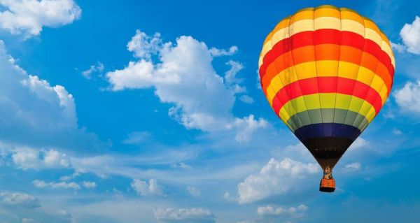

THE EXPERIENCE AGENCY
LET BALÓNEM

Zážitek obsahuje:
- letenku pro jednu osobu
- 60 minut letu
- seznámení s průběhem letu
- doprava na místo startu a zpět
- pojištění pasažéra
Popis zážitku:
Posádka balón nachystá k letu, pasažéři mohou s přípravou pomáhat.
Pilot poučí pasažéry o chování při letu a po nastoupení do koše nastává odlet.
Obvyklá doba letu je jedna hodina, délka letu závisí na rychlosti větru, většinou uletíme vzdálenost 10–15 km vzdušnou čarou.
Pozemní doprovod naloží pasažéry a techniku a dopraví vše na místo startu.
Počet osob: 1 (+pilot +další pasažéři. Celkem 8-16 osob v koši)